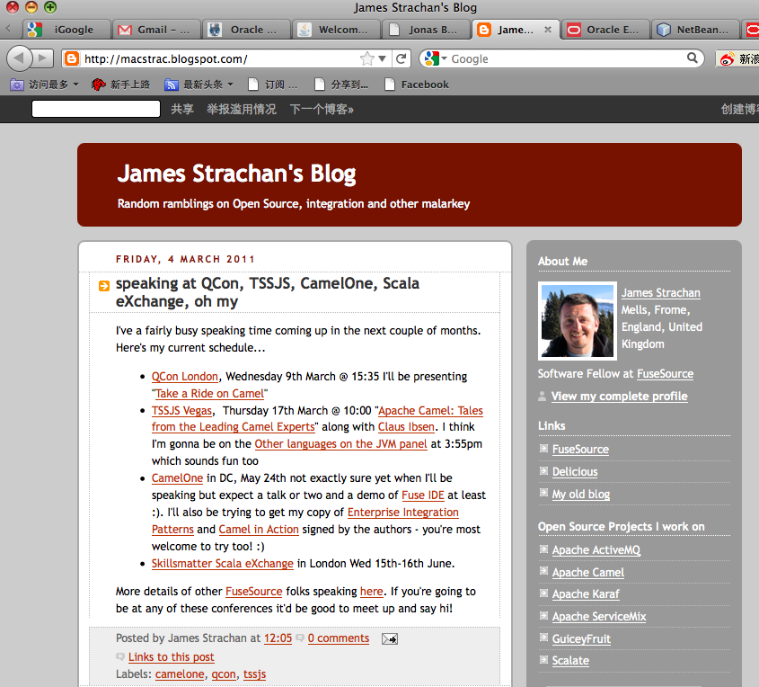

中国的Java Champion有两位，都是2005年中国召开JavaChina期间突击授予的。一位是清华大学的许斌教授，他很早就在高校推广Java。另一位是李墨，是北京Java User Group创立人。@甲骨文Java社区:Java Champion是给从事Java相关工作的技术人员很高的一个荣誉，从Java诞生开始，全球目前也只授给了130人左右。Java创始人James Gosling也在其中。网页链接
新增加的Java Champion中有英国人James Strachan, 看他的博客可以知道，他不但是多个Apache 开源项目的参与者，也是基本技术书籍的作者，更是很多技术大会的演讲者。作为开发者，可以多借鉴一些Java Champion的路径，除了技术功底外，书写和演讲的能力必不可少。网页链接 
甲骨文社区日放在了周六（5月14日），为找讲师，联系了公司里的两个技术人员，一个同事，因为业务上没那么紧密，不能要求老板派任务。听说是周六，就表示木有兴趣了。一个同事说老板不支持和本职无关的活动，但因为是周六，老板管不着，他就可以来讲啦。社区活动要找的就是这类有内驱力的技术人。
是这样的，平台和宣传别人都帮着做好了，自己不知道利用就太可惜了。 //@牛秀元:树立个人品牌的好机会啊，看问题要站的高一点。@Ada李力:甲骨文社区日放在了周六（5月14日），为找讲师，联系了公司里的两个技术人员，一个同事，因为业务上没那么紧密，不能要求老板派任务。听说是周六，就表示木有兴趣了。一个同事说老板不支持和本职无关的活动，但因为是周六，老板管不着，他就可以来讲啦。社区活动要找的就是这类有内驱力的技术人。